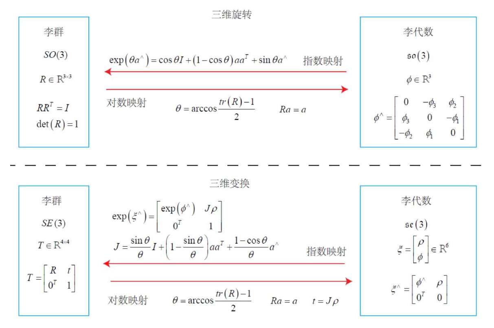

Geometry
The geometry module is a foundation of the entire system. It defines some very basic data structures and implements basic operations and algorithms, including points, transformation matrix, the conversion between Lie groups and Lie algebras (SE(3), se(3)) etc., as well as the definition and implementation of common data structures such as point clouds, triangular mesh and related algorithms.
Geometry.h
In Geometry.h, the first thing you shuold notice is that:
typedef float scalar;
By default, float is used as the scalar type, so the format of point clouds, matrix, etc. are all single-precision, and the floating-point number precision used by the entire library can be changed here.
typedef Vector6 Se3;
typedef Matrix4 SE3;
Lie group Lie algebras are defined as SE3 and Se3, which are four-dimensional square matrix and six-dimensional matrix, respectively, through the function:
Matrix4 Se3ToSE3(const Vector6 &input);
Vector6 SE3ToSe3(const Matrix4 &input);
you can do the conversion. These functions are implemented based on Sophus library(In Open3D, the mutual conversion from a 6-dimensional vector to a 4-dimensional square matrix is completely unchanged for the translation part, but from the mathematical derivation, there is a slight difference between the two, so the Sophus library should be more accurate).

struct VoxelGridHasher;
struct PixelGridHasher;
The above two are hash functions for three-dimensional and two-dimensional integer vectors, and spatial hashing is a very efficient data structure.
std::tuple<Point3, double, double> FitPlane(const Point3List & _points);
std::tuple<Vector2, double, double> FitLine(const Point2List & _points);
The above functions are used to fit a set of 3D point planes and 2D point lines. For example, in a three-dimensional coordinate system, the parametric equation of a plane is: \(ax+by+cz+d = 0\), where \(n=\{ a, b, c\)^T\) is the normal vector of the plane. The return value type of the above function is std::tuple, where the first term is the normal vector, and the second is \(d\). The third one is a ratio of the second largest singular value to the largest singular value (using SVD to fit a plane or a straight line, you can get singular values), which can be used as an indicator of the error between the original points and the fitted plane. If all points are in On the plane, the value is 0. That is, the better the plane fits, the smaller the value.
In Geometry.h, some other aliases are also defined. These aliases are defined for easy-understanding. Some basic knowledges of Feature Matching, etc. is needed to understand the meaning.
Geometry2d.h
Geometry2d.h implements some geometric algorithms on 2d, mainly to calculate some very basic content of geometry. This part is written for DCEL (doubly connected edge list) in Algorithm. The main functions in this part are:
//Check if a point is inside a convex polygon
int CheckPointInConvexPoly(const geometry::Point2List &points, const Point2 &p);
//Calculate the area of a convex polygon
float ComputeAreaConvexPoly(const Point2List &points);
PointCloud.h
PointCloud.h implements some point cloud-related data structures and algorithms. The point cloud contains points, colors, and normals (the latter two are optional). The related algorithms include point cloud downsampling, normal vector estimation, and so on. Some basic member functions are listed below:
//Read PCD from PLY file
void LoadFromPLY(const std::string &filename);
//Read PCD from OBJ file
void LoadFromOBJ(const std::string &filename);
//Read PCD from color and depth
void LoadFromRGBD(const cv::Mat &rgb, const cv::Mat & depth, const camera::PinholeCamera &camera );
void LoadFromRGBD(const RGBDFrame &rbgd, const camera::PinholeCamera &camera );
//Estimate the normal vector by fitting a plane to the surrounding points of a certain point.
//`radius` represents the search radius, and `knn` represents the number of fitting points
void EstimateNormals(float radius = 0.1, int knn = 30);
//Transform pcd
void Transform(const TransformationMatrix &T);
//Down sample
std::shared_ptr<PointCloud> DownSample(double grid_len);
//Write pcd to PLY file
bool WriteToPLY(const std::string &fileName) const;
//Write pcd to OBJ file
bool WriteToOBJ(const std::string &fileName) const;
//Merge this pcd with another one
void MergePCD(const PointCloud & another_pcd);
TriangleMesh.h
TriangleMesh defines the triangular mesh data structures and related algorithms. The biggest difference between a triangular mesh and a point cloud is that there are edges and faces in triangle mesh. In the triangular mesh, each face is a triangle and consists of 3 points. Therefore, there is also a face table in the triangular mesh, which stores the indexes of the 3 points of each triangle. The currently implemented grid does not contain textures.
//Read mesh from PLY file
void LoadFromPLY(const std::string &filename);
// Read Mesh from OBJ file
void LoadFromOBJ(const std::string &filename);
/*
Calculating the normal vector, the normal vector of the triangular grid is easier to estimate compared to the normal vector of the pcd.
First of all, the triangular mesh already has a face, and you can directly find the plane based on the three points to get the normal vector of the face.
Then, we only need to perform a weighted average of the normal vectors of all the faces connected to the point to get the normal vector of a point.
*/
void ComputeNormals(float radius = 0.1, int knn = 30);
//Transform the mesh
void Transform(const TransformationMatrix &T);
//Write mesh to PLY file
bool WriteToPLY(const std::string &fileName) const;
//Write mesh to OBJ file
bool WriteToOBJ(const std::string &fileName) const;
//Simplify mesh with edge collapse based on quadric error
std::shared_ptr<geometry::TriangleMesh> QuadricSimplify(int target_num) const;
//Voxel-based uniform grid simplification, similar to point cloud downsampling
std::shared_ptr<geometry::TriangleMesh> ClusteringSimplify(float grid_len) const;
//Remove fragments whose connected points is less than a threshold
std::shared_ptr<geometry::TriangleMesh> Prune(int min_points) const;
For details of quadric simplification, refer to:related_paper/quadrics.pdf.
Comparison of simplification: Simplification
Ransac.h
Ransac.h mainly implements two specific algorithms that use ransac, based on a basic Ransac framework GRANSAC. The advantage of Ransac is that it will randomly extract some points are used to find a certain transformation or model, so that outliers can be largely excluded. For example, when fitting a plane, if you use the FitPlane in Geometry.h to directly fit, then the outlier will have a great impact on the result. And using Ransac can get better results.
//Use Ransac to estimate the relative transformation
TransformationMatrix EstimateRigidTransformationRANSAC(const PointCorrespondenceSet &correspondence_set,
PointCorrespondenceSet & inliers, std::vector<int> &inlier_ids, int max_iteration = 2000, float threshold = 0.1);
//Use Ransac to fit plane
std::tuple<geometry::Point3, double, double> FitPlaneRANSAC(const Point3List &points,
Point3List & inliers, std::vector<int> &inlier_ids, int max_iteration = 2000, float threshold = 0.05);
You can get the inlies and corresponding indices using above function.
RGBDFrame.h
RGBDFrame.h defines the RGBDFrame data structure, which integrates the depth map and the color map, and can simplify the calling process. This data structure is mainly used to serve an RGBD SLAM system. It can save some of the extracted features, point cloud and so on, which are needed for tracking. When building an RGBD SLAM, for efficiency these contents do not need to be recalculated. Release() is used to release all saved content.